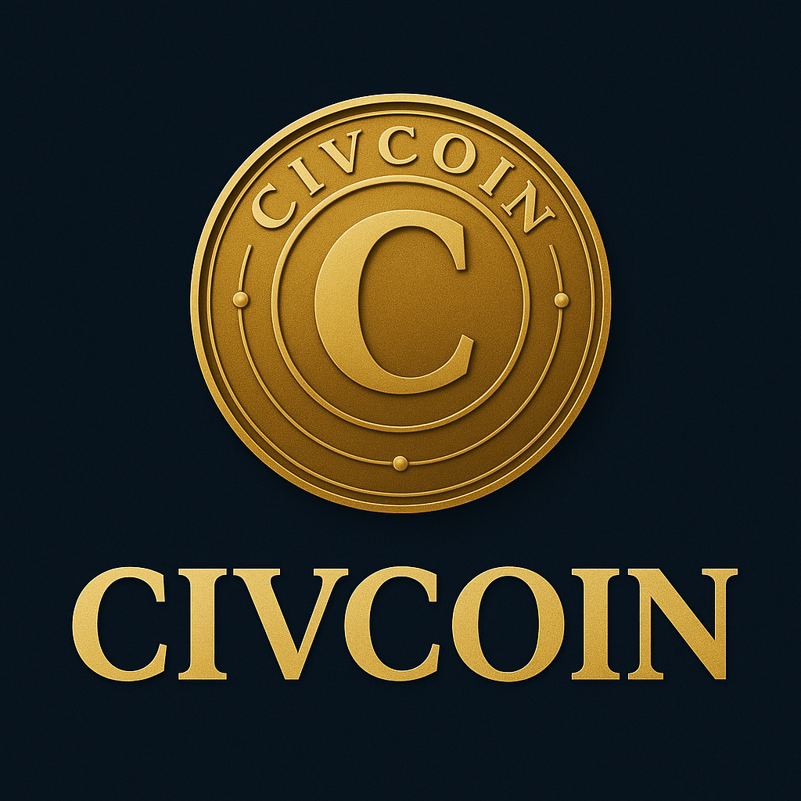

See where your tax dollars go, have your say on what it gets spent on, and get rewarded.
Follow on X Read on SubstackCivCoin is a crypto-backed movement to make governments transparent, fair, and accountable. Australians deserve to know where tax dollars go — and have a say in how it’s spent. This isn’t just a coin — it’s a call for power to return to the people.
CivCoin is about building a better future together. By using transparency and technology, we can guide public funds toward what really matters — infrastructure, healthcare, education, and innovation. It’s not about blame — it’s about building a country we’re proud to live in, one tax dollar at a time.